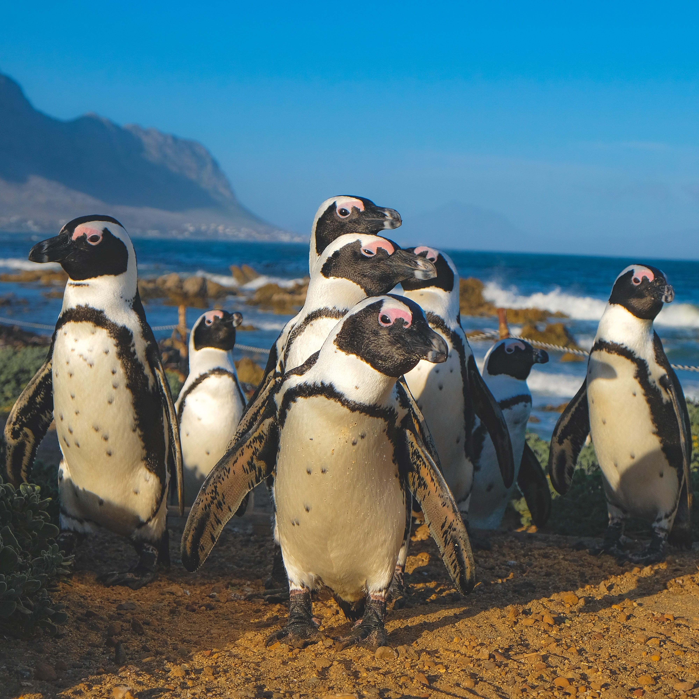
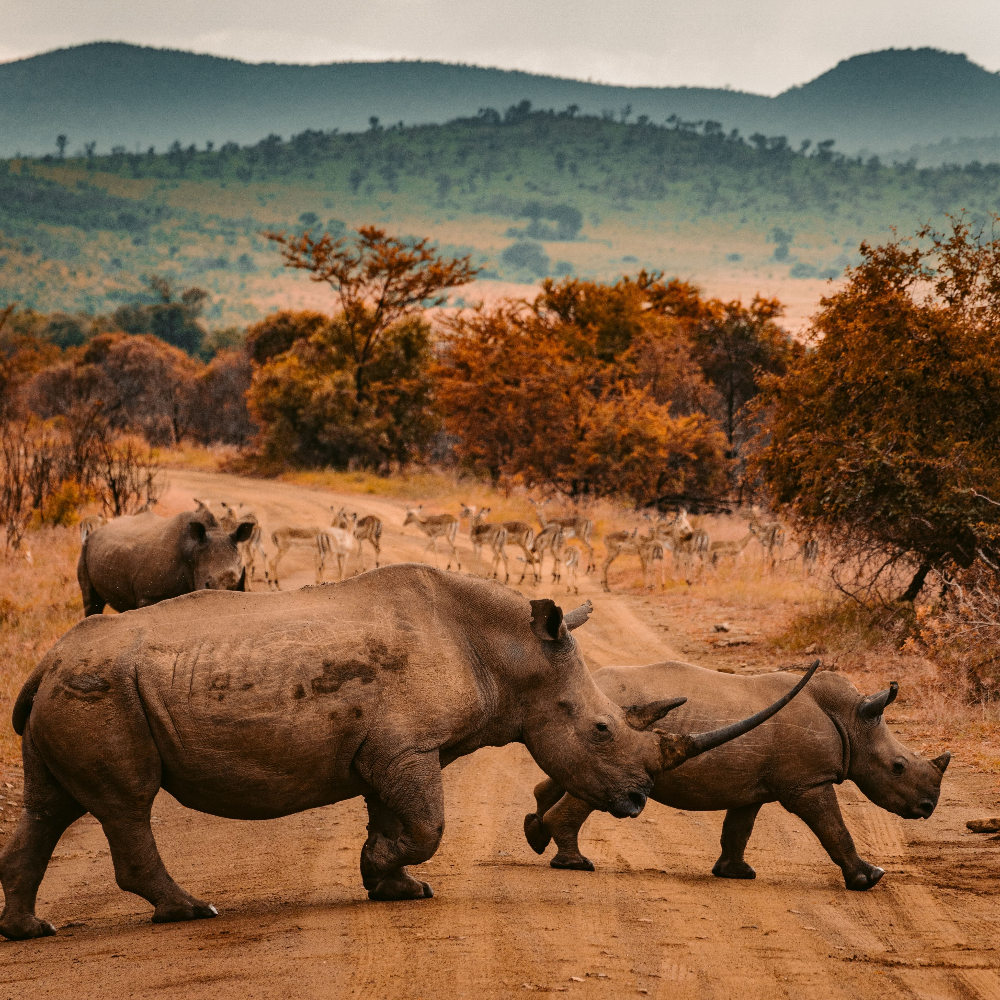

South Africa
From Vibrant Cape Town to the Wild Beauty of Kruger
My South African adventure began in the captivating city of Cape Town, nestled at the foot of the iconic Table Mountain. This coastal gem welcomed me with a blend of cultures, where Dutch, British, African, and Malay influences intertwined harmoniously. I embarked on a historic tour of Robben Island, where Nelson Mandela had been imprisoned, and the experience offered a poignant look into the country's struggle for freedom. My heart swelled with awe as I gazed upon the breathtaking vistas from the summit of Table Mountain, a place where mountains met the sea in a breathtaking display of nature's artistry. In Cape Town, I couldn't resist the thrill of shark cage diving off the coast, coming face to face with these magnificent creatures in their natural habitat. The adrenaline rush and the sheer awe of being inches away from a great white shark was a once-in-a-lifetime experience.
 Next, my journey led me to Johannesburg, the economic powerhouse and cultural hub of South Africa. This bustling city is a true melting pot, reflecting the nation's rich diversity. Visiting the Apartheid Museum, I was profoundly moved by the poignant exhibits that chronicled the country's tumultuous past. In the vibrant neighborhood of Maboneng, I immersed myself in the city's creative renaissance, where street art and innovation converged. Exploring Soweto, the historic heart of the anti-apartheid movement, I walked in the footsteps of icons like Desmond Tutu and Nelson Mandela, gaining insight into their enduring legacy. In Johannesburg, I ventured into the Cradle of Humankind, a UNESCO World Heritage site, and explored ancient caves like Sterkfontein, where some of the oldest hominid fossils have been discovered. It was a surreal experience to stand where our human ancestors once roamed.
Leaving the city behind, I embarked on the famous Garden Route, a lush coastal stretch that unfurled like a verdant carpet before my eyes. From the enchanting Tsitsikamma Forest to the golden beaches of Plettenberg Bay, every twist and turn of this region offered an awe-inspiring view. At Addo Elephant National Park, I was treated to a wildlife spectacle, where herds of majestic elephants roamed freely and the bushveld teemed with diverse species. This journey along the Garden Route was a testament to South Africa's natural beauty. I couldn't resist the thrill of zip-lining through the canopy of the Tsitsikamma Forest, surrounded by towering trees and breathtaking views. The rush of flying through the treetops was exhilarating and allowed me to connect with the region's pristine nature.
The crown jewel of my South African expedition was undoubtedly Kruger National Park. This sprawling wilderness sanctuary, home to the Big Five and countless other species, was a true safari paradise. I embarked on thrilling game drives, tracking lions through the savannah, observing herds of elephants at serene watering holes, and witnessing the elusive grace of leopards. Staying in traditional lodges and hearing the distant roars of lions under the starry African sky was a truly immersive experience, allowing me to connect with the untamed beauty of South Africa's wild heart. In Kruger, I had the opportunity to participate in a guided walking safari, led by experienced rangers. Walking among the wildlife, feeling the earth beneath my feet, and listening to the sounds of the bush was an intimate encounter with Africa's natural wonders.
 Continuing my journey eastward, I reached the coastal city of Durban, where the Indian influence was palpable. The aromatic spice markets, vibrant street food stalls, and the ornate architecture of the Juma Masjid Mosque transported me to a different world. Durban was a captivating fusion of cultures, perfectly exemplifying South Africa's diversity and offering a tantalizing taste of the Indian subcontinent. In Durban, I couldn't resist the allure of learning traditional Indian cooking. I took part in a cooking class where I prepared delicious curries and biryanis, gaining insights into the intricate flavors and techniques of Indian cuisine.
Heading towards the southeastern shores, the Wild Coast unfolded before me in all its unspoiled grandeur. This rugged coastline, untouched by modern development, offered a glimpse into the raw beauty of South Africa. Dramatic cliffs plunged into the azure sea, pristine beaches stretched endlessly, and rural Xhosa villages nestled amidst rolling hills. It was a stark contrast to the urban centers, showcasing the nation's multifaceted identity and the untamed allure of its natural landscapes. In the Wild Coast region, I had the privilege of hiking the breathtaking Wild Coast Trail, taking me through remote landscapes and allowing me to interact with the warm and welcoming Xhosa communities along the way. It was an authentic and enriching experience.
As my South African sojourn drew to a close, I couldn't help but reflect on the profound journey I had undertaken. South Africa is a land of infinite wonders, where history, culture, and nature converge in a symphony of diversity. It's a place where vibrant cities, stunning landscapes, and untamed wilderness combine to create an unforgettable adventure, leaving an indelible mark on the heart and soul of every traveler.
Join me in my future travels as I continue to explore the vast and multifaceted continent of Africa, uncovering its hidden gems and sharing the beauty of its cultures and landscapes with the world. Until next time, keep your wanderlust alive and your heart open to the wonders of the world.